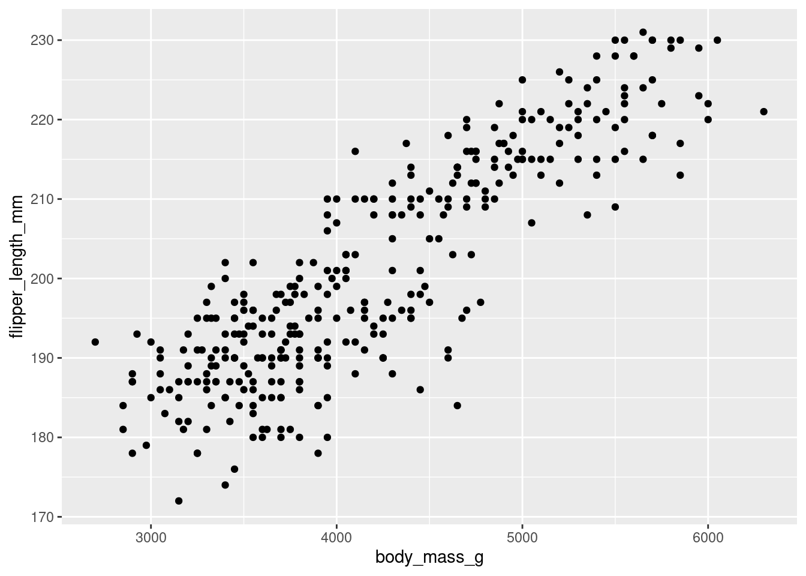
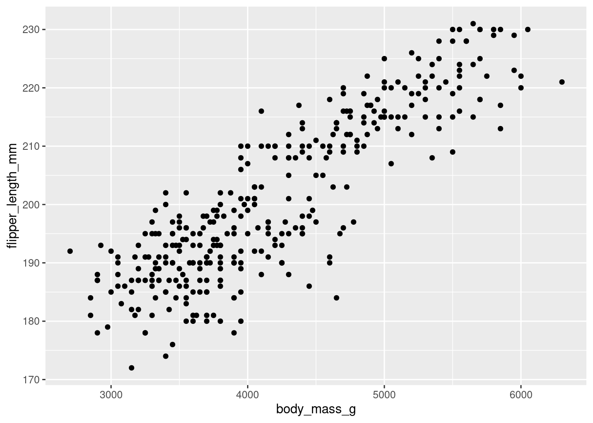
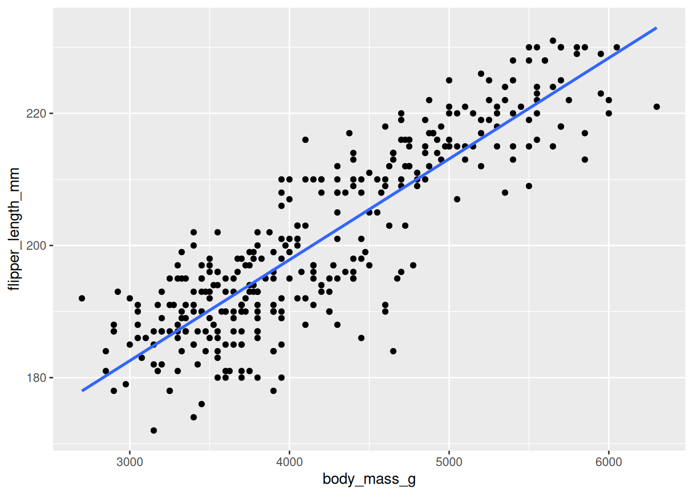
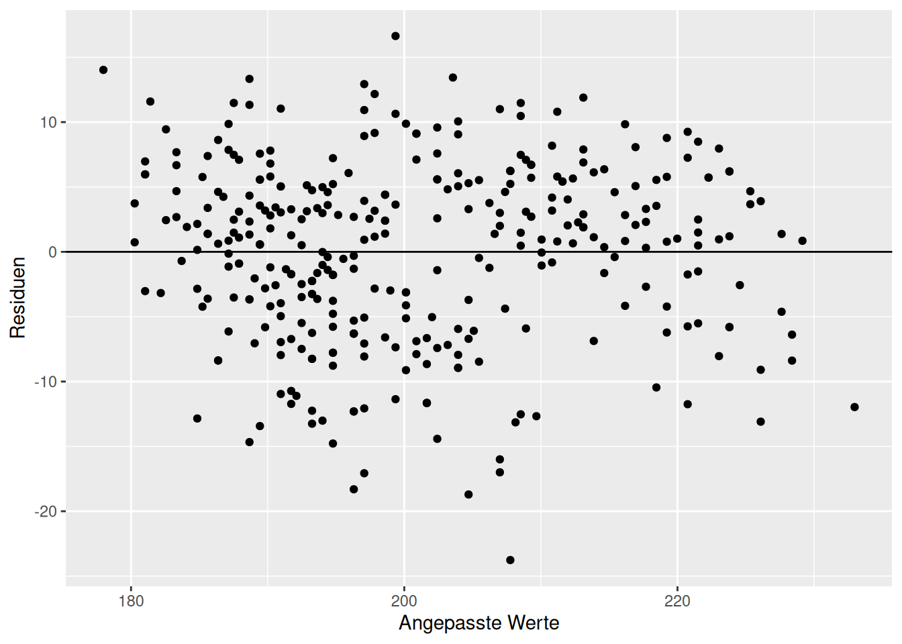
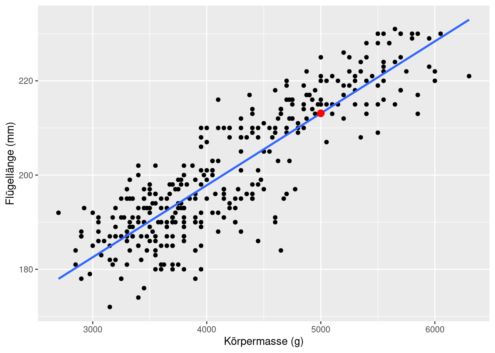

ggplot(data = penguins, mapping = aes(x = body_mass_g, y = flipper_length_mm)) +
geom_point()Warning: Removed 2 rows containing missing values or values outside the scale range
(`geom_point()`).
Woher kommt der Begriff Regression? Diesen prägte Sir Francis Galton (1822-1911) (Fahrmeir, Kneib, and Lang 2009). Galton interessierte sich unter anderem für den Zusammenhang zwischen der durchschnittlichen Körpergröße der Eltern und der Körpergröße ihrer erwachsenen Kinder. Leider war er nicht nur einer der Väter der Statistik, sondern auch ein Rassist.
Galton stellte fest, dass Kinder von unterdurchschnittlich kleinen Eltern eher größer waren und umgekehrt, Kinder von überdurchschnittlich großen Eltern eher kleiner waren. Diesen Effekt nannte er Regression (Rückkehr) zur Mitte.
Die Regression ist ein Modell, dass einen Zusammenhang zwischen Variablen analysiert. Wenn dieser Zusammenhang linear ist, dann nennt man das Modell lineare Regression. Wir werden uns ausschließlich mit solchen linearen Modellen beschäftigen.
Die lineare Regression untersucht also den linearen Zusammenhang zwischen den sogen. erklärenden Variablen und der Zielvariablen. Im historischen Beispiel von Galton gab es nur eine erklärende Variable, nämlich die Durchschnittsgröße der Eltern. Die Zielvariable war die zu erwartende Größe der Kinder. Es ging also nicht darum, die exakte Größe eines bestimmten Kindes zu berechnen, sondern den Einfluss der Durchschnittsgröße der Eltern auf die zu erwartende (oder eben mittlere) Größe der Kinder. Es ging also nicht um bestimmte Eltern-Kind-Paare.
Die Zielvariable muss nicht immer stetig wie die Körpergröße sein. Sie kann binär, kategorial oder eine Zählvariable sein. Auch die erklärenden Variablen können stetig, binär oder kategorial sein. Das macht die Regressionsmodelle sehr divers. Wir werden uns im Wesentlichen mit numerischen Zielvariablen beschäftigen.
Die Formel für die lineare Regression mit einer erklärenden Variablen haben Sie bereits in der Vorlesung kennengelernt:
\(y=b_0+b_1 \cdot x+e\)
Wir nutzen den Datensatz penguins aus dem Paket palmerpenguins, um das lineare Modell mit einer erklärenden Variablen anzupassen. Unsere Forschungsfrage lautet:
Können wir aus der Körpermasse der Pinguine deren mittlere Flügellänge vorhersagen?
Als Erstes müssen wir untersuchen, ob es überhaupt einen plausiblen linearen Zusammenhang zwischen Körpermassen und Flügellängen gibt. Dazu stellen wir die beiden Variablen in einem Streudiagramm dar. Dabei wird die erklärende Variable auf der \(x\)-Achse und die Zielvariable auf der \(y\)-Achse dargestellt.
ggplot(data = penguins, mapping = aes(x = body_mass_g, y = flipper_length_mm)) +
geom_point()Warning: Removed 2 rows containing missing values or values outside the scale range
(`geom_point()`).
Bei diesem Bild kann man von einem linearen Zusammenhang ausgehen. Wir können für die Visualisierung gleich die Gerade hinzu plotten. Das übernimmt das geom_smooth. Allerdings wird hier die Gerade lediglich dargestellt, die Modellparameter werden nicht gespeichert. Der Parameter method = 'lm' zeigt, dass wir eine Gerade plotten wollen und se = FALSE verhindert das Darstellen der Konfidenzintervalle (das werden wir erst später kennenlernen).
ggplot(data = penguins, mapping = aes(x = body_mass_g, y = flipper_length_mm)) +
geom_point() +
geom_smooth(method = 'lm', se = FALSE)`geom_smooth()` using formula = 'y ~ x'Warning: Removed 2 rows containing non-finite outside the scale range
(`stat_smooth()`).Warning: Removed 2 rows containing missing values or values outside the scale range
(`geom_point()`).
Um das lineare Modell anzupassen und danach die Parameter interpretieren zu können, nutzen wir die Funktion lm(). Das steht für engl. linear model.
mod <- lm(formula = flipper_length_mm ~ body_mass_g, data = penguins, na.action = na.exclude)Der Parameter des Aufrufs ist wie folgt:
formula = flipper_length_mm ~ body_mass_g: Das ist die Geradengleichung, die wir anpassen wollen. Die Struktur ist \(y ~ x\), also Zielvariable ~ Prädiktor. Man kann formula = weggelassen und gleich flipper_length_mm ~ body_mass_g schreiben.data = penguins: Datensatz, in dem die Variablen zu finden sindna.action = na.exclude: Die fehlenden Werte sollen für die Modellierung ignoriert werden.Die Modellergebnisse haben wir dem Objekt mod zugeordnet. Das enthält sowohl die Modellparameter als auch die Residuen und die angepassten Werte. Die Modellparameter sind der \(y\)-Achsenabschnitt (engl. intercept) und die Steigung der Geraden. Die Funktion tidy()aus dem Paket broom() sorgt für ein schönes Layout der Tabelle:
mod %>%
tidy()Der \(y\)-Achsenabschnitt ist also 136,7 mm und die Steigung 0,02 mm/g. Um die anderen Spalten kümmern wir uns im weiteren Verlauf des Kurses.
Als Nächstes müssen wir überprüfen, ob die Residuen in unserem Modell irgendwelche auffälligen Muster zeigen. Das wäre ein Hinweis darauf, dass wir entweder ein falsches Modell (z. B. linear statt nicht-linear) angepasst oder evtl. eine erklärende Variable nicht berücksichtigt haben.
Die Residuen werden in einem sogen. Residualplot dargestellt. Dabei werden auf der \(x\)-Achse die vom Modell angepassten Werte, d. h. die Werte auf der Geraden, dargestellt, und auf der \(y\)-Achse die Residuen. Um den Aufruf zu ggplot() zu vereinfachen, speichern wir die Residuen und die angepassten Werte direkt im Datensatz penguins mithilfe von `mutate().
penguins <- penguins %>%
mutate(residuals = residuals(mod),
fitted = fitted(mod))Der Residualplot sieht wie folgt aus:
ggplot(data = penguins, mapping = aes(x = fitted, y = residuals)) +
geom_point() +
geom_hline(yintercept = 0) +
labs(x = 'Angepasste Werte', y = 'Residuen')Warning: Removed 2 rows containing missing values or values outside the scale range
(`geom_point()`).
Man bekommt eine Warnung, dass der Datensatz 2 Fehlwerte enthält. Die Streuung der Residuen sieht gleich aus für den gesamten Bereich der angepassten Werte und es sind keine Muster zu erkennen. Es spricht also dafür, dass das Modell soweit plausibel für unsere Daten ist.
Der Determinationskoeffizient \(R^2\) ist ein Gütemaß für das angepasste Modell. Er zeigt, wie viel Variabilität der Zielvariablen, hier also der Flügellängen, wird vom Modell erklärt. Mit anderen Worten, wenn wir das Modell verwenden und die Information über die Körpermasse der Tiere nutzen, um wie viel sinkt dann die Variabilität unserer Vorhersagen der Flügellängen.
Den Determinationskoeffizienten \(R^2\) können wir mit der Funktion glance() anzeigen lassen. Er steht gleich in der ersten Spalte r.squred.
mod %>%
glance()Der Determinationskoeffizient ist gerundet 0.76. Das bedeutet, dass unser Modell ca. 76% der Variabilität der Flügellängen erklärt. Es ist ein sehr gutes Modell.
Die Steigung des linearen Modells beschreibt, um wie viel die durchschnittliche Flügellänge sich ändert, wenn die Körpermasse des Tieres um eine Einheit (also ein g) steigt. Der \(y\)-Achsenabschnitt beschreibt die durchschnittliche Flügellänge, wenn die Körpermasse 0 ist. Das ist keine relevante Größe, da Körpermassen von 0 nicht beobachtet werden. Allerdings darf man den \(y\)-Achsenabschnitt nicht einfach weglassen, da sonst die Gerade nicht optimal an die Daten angepasst wird.
Bearbeiten Sie das Tutorium “Regression modeling: 4 - Interpreting regression models”, das Sie hier finden. Das Tutorium muss nicht abgegeben werden.
Nachdem Sie das Tutorium durchgearbeitet haben, nutzen Sie Ihr neues Wissen, und
new_data <- data.frame(body_mass_g = 5000).augment(). Es sollte die folgende Abbildung dabei entstehen:
Reichen Sie die Aufgabe Kapitel 7.4.2 bei FelloFish ein und erhalten Sie feedback: